1. Resumen y mapa del laboratorio
En esta práctica se crea un grupo de recursos con dos cuentas de almacenamiento. Se organizan mediante etiquetas, se aplican bloqueos para protegerlas frente a operaciones no deseadas y se comprueba el efecto de retirar dichos bloqueos. Al final se elimina el grupo de recursos para limpiar el entorno.
| Componente Azure | Valor de la práctica |
|---|---|
| Grupo de recursos | rg-gp-tags-locks |
| Cuenta de almacenamiento 1 | stgptagslockgsc1 |
| Cuenta de almacenamiento 2 | stgptagsopsgsc2 |
| Región | Spain Central |
| Etiquetas aplicadas | departamento y entorno |
| Tipos de bloqueo probados | Eliminar y Solo lectura |
2. Ejercicio 1: Creación de recursos y aplicación de etiquetas
Se crea el grupo de recursos rg-gp-tags-locks y dos cuentas de almacenamiento. Después se etiquetan el grupo y las cuentas para organizarlos y poder localizarlos mediante filtros. La primera cuenta se etiqueta para el departamento de desarrollo y la segunda para el de operaciones; ambas pertenecen al entorno de prueba.
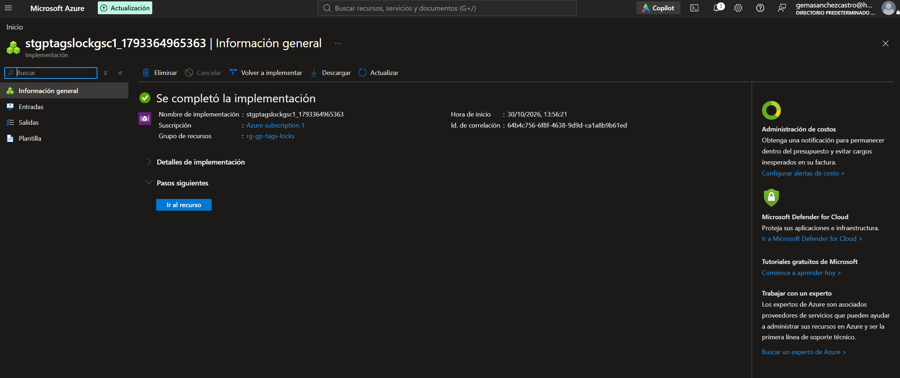
stgptagslockgsc1 en el grupo de recursos rg-gp-tags-locks.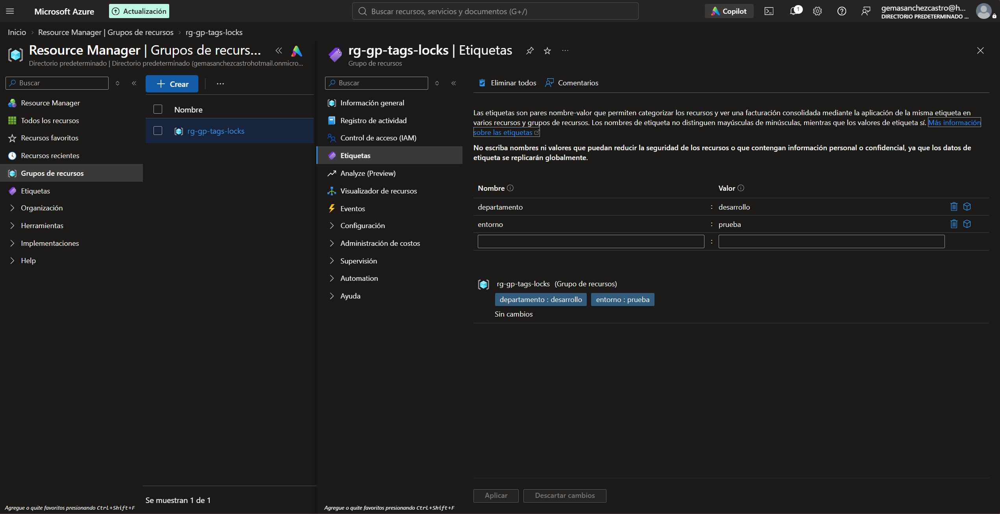
rg-gp-tags-locks: departamento: desarrollo y entorno: prueba.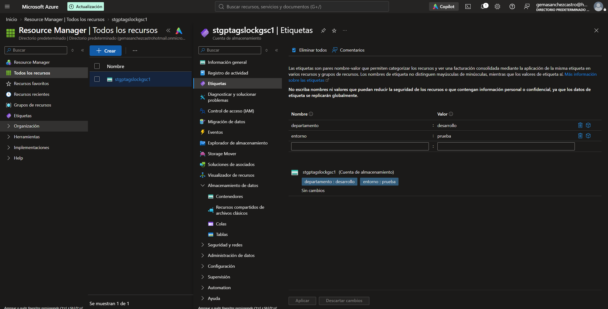
stgptagslockgsc1: departamento: desarrollo y entorno: prueba.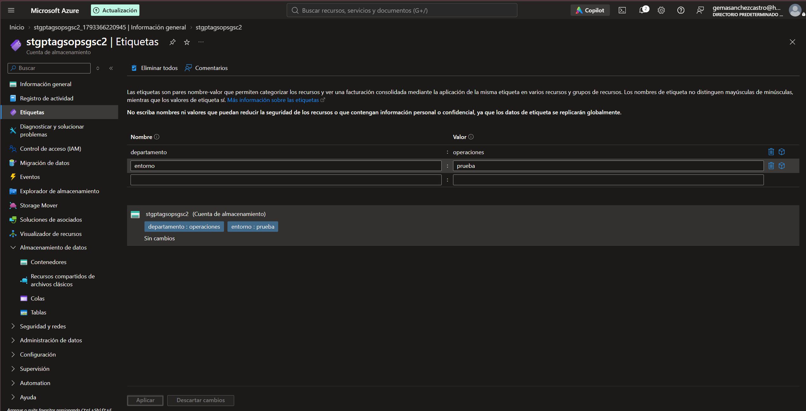
stgptagsopsgsc2: departamento: operaciones y entorno: prueba.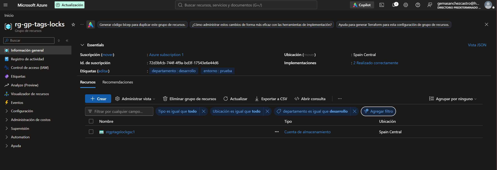
departamento: desarrollo, que muestra la primera cuenta de almacenamiento stgptagslockgsc1.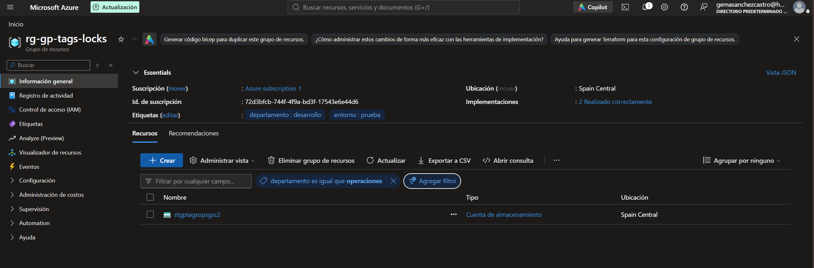
departamento: operaciones, que muestra la segunda cuenta de almacenamiento stgptagsopsgsc2.3. Ejercicio 2: Aplicación de bloqueos de recursos
Se aplican dos tipos de bloqueo a las cuentas de almacenamiento: un bloqueo de eliminación para impedir el borrado accidental y un bloqueo de solo lectura para evitar cambios en el recurso. Los bloqueos se configuran desde Azure y se comprueba su ámbito.
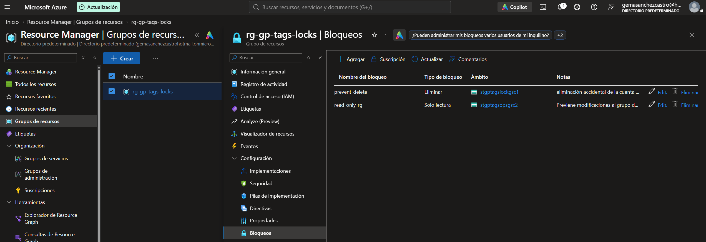
prevent-delete de tipo Eliminar y bloqueo read-only-rg de tipo Solo lectura, aplicados a las cuentas indicadas.4. Ejercicio 3: Prueba de la aplicación de bloqueos
Se prueban los bloqueos intentando realizar operaciones protegidas. La cuenta con bloqueo de solo lectura no permite añadir etiquetas y la cuenta con bloqueo de eliminación no se puede borrar. Después de quitar los bloqueos, se comprueba que las operaciones vuelven a estar disponibles.
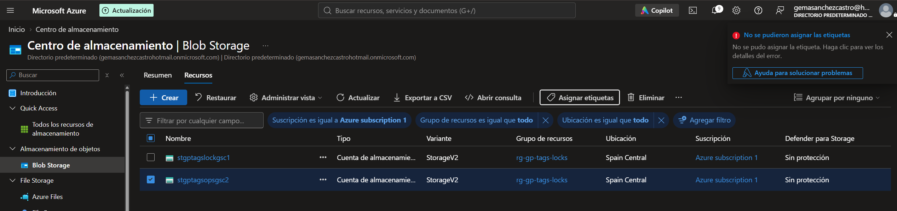
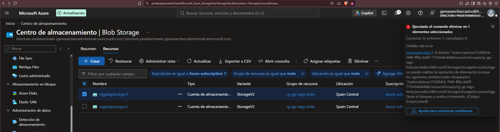
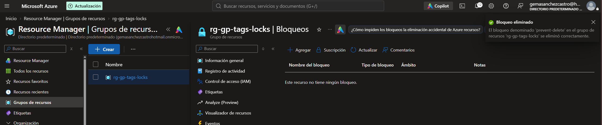
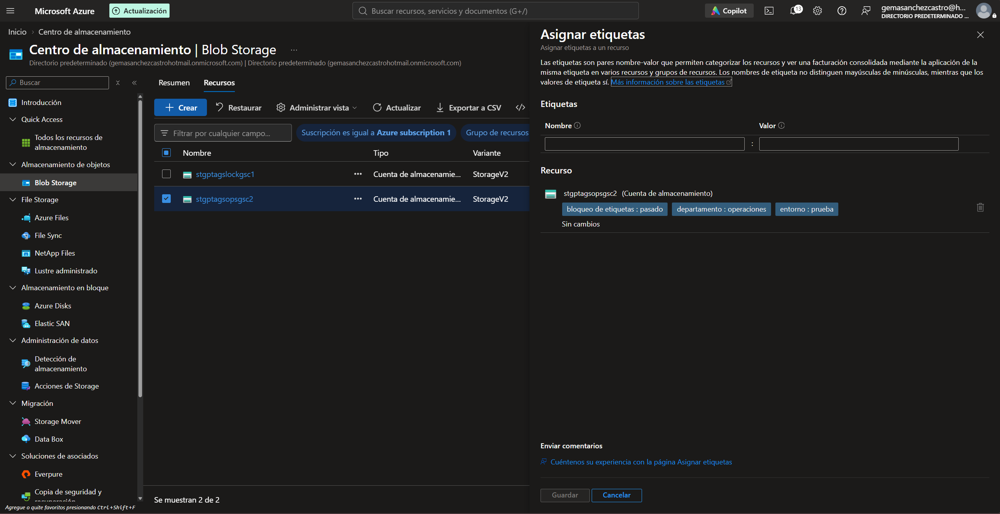
5. Limpieza de recursos
Al terminar la práctica, se elimina el grupo de recursos rg-gp-tags-locks, junto con los recursos que contiene. Así se evita mantener recursos de laboratorio activos y se reducen posibles costes en la suscripción.
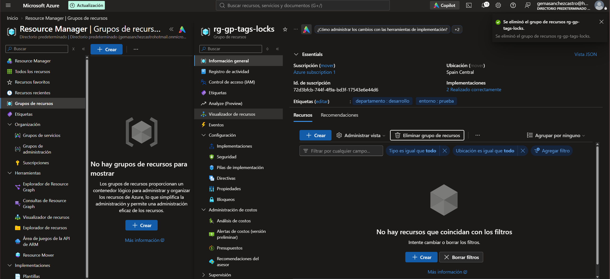
rg-gp-tags-locks.